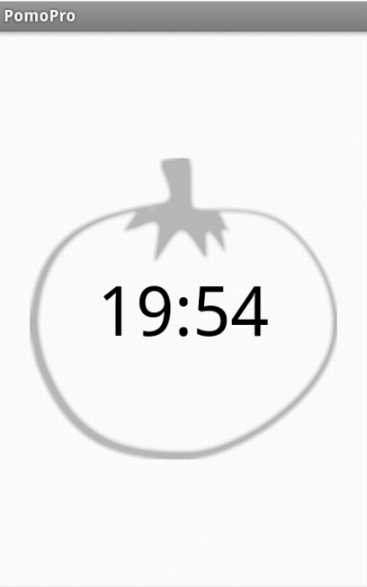

PomoPro is a small app for Android, which is dedicated to help you tracking your pomodoros. There are no disturbing features that try to take away your concentration. Just pure pomodoro-tracker.
PomoPro is made for students, who want to learn in a library, that means, PomoPro has no features that could disturb others.
The Pomodoro Technique is a time management method developed by Francesco Cirillo in the late 1980s. The technique uses a timer to break down periods of work into 25-minute intervals called 'Pomodoros' (from the Italian word for 'tomatoes') separated by breaks.
If you want to read more about the Pomodoro Technique, read http://www.pomodorotechnique.com/
The following features are integrated in PomoPro 1.1
The following features are planned for further releases:
If you have any suggestions for some cool features, tell me on github
.This section explains you, how to use PomoPro, although it is really straight-forward.
After you've started the app for the first time, it should look like this:
At the top of the screen you can see three Buttons:
Click on one of these, to start a pomodoro or a break. After that, your screen should look like this:
Press the menu-button on your device, to open the menu. You screen should look like this:
Press cancel, to abort the current pomodoro or break
The history shows you last 10 actions (pomodoros / breaks). The icon on each line indicates, whether you've finished the action (green check) or not (red line). The latest actions are at the top of the history.
You can delete your history (latest 10 actions). Press the menu-Button on your screen. Your screen should look like this:
Press delete History. That's it.
Thanks to horse50 and Anselmus for providing free graphics, that I could use in this app.